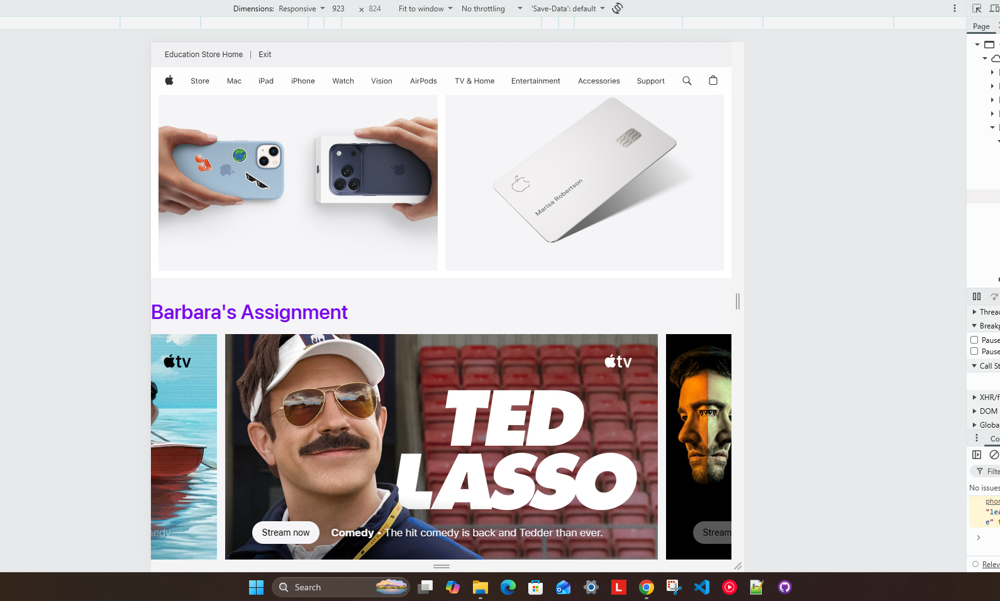

My Dev Tools Vandalism
I used browser developer tools to temporarily "vandalize" a website. Below is a screenshot showing my changes. These edits only appeared on my computer and did not affect the actual website.

What I "Vandalized"
I changed the color and alignment of the font for the heading of the original "Entertainement" section of the Apple.com web page.
- First I changed the words of the heading to personalize it for myself.
- I changed the color and aligned the font left instead of leaving it centered.
- Adding my name and favorit color to the text was enough to make me smile and enjoy this assignment.
- Altering the text itself was much simpler than changing the alignment and color. There were overiding CSS files within the coding that I had to keep going one layer deeper to find. I did not figure out how to adjust the font due to so many layers of CSS files, that was irritating to me.
- The wording was changed to make the object changed easier to spot. The color and alignment were for fun.
- The tools aided me with finding the correct area of HTML to adjust the wording. Is was more complicated to delve into the layers of CSS files to change the color and alignment.
- I think now understanding how I can play with the Dev tools to test how something will look I can now make better choices about the styles used on pages I am creating. I also think it will make building the style more fun as I test changes to finding what is pleasing personally.